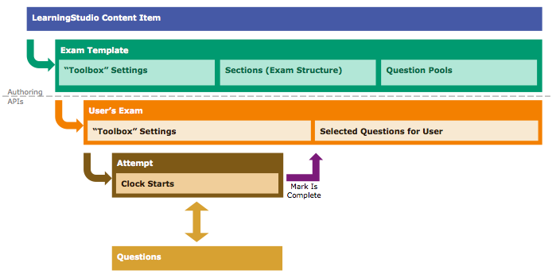

Exams
Documentation
The complete documentation for the Exams APIs is available here.
API Keys
You will need keys to work with the APIs.
- Application ID: Identifies your Application for analytics and quota limits.
- Campus Keys: A Token Key Moniker (TKM), Shared Secret, and Client String identifies the LearningStudio campus where your data comes from.
You can get an Application ID for your app and campus keys for our Sandbox Campus by creating an app on the PDN. Learn more here.
Supported Formats
This library only supports JSON-formatted requests.
Identifier Parameter Types
Except where specified, all parameters types are strings including identifiers like Course ID, User ID, etc.
Contents
Introduction
The Exams library facilitates working with our Exams APIs for LearningStudio. This is one of our more complex areas, so the library is intended to streamline a variety of operations.
This library provides a PHP-specific method for each of the Exams API endpoints. Note that the library speaks in JSON, so you will provide JSON payloads to POST and PUT requests, and receive responses as JSON-formatted strings. The parameters of the method are the values that would be inserted into the endpoint, for example, /users/{userId}/courses. The complete documentation for each method is linked in the Methods section, below.
This library also has composite methods that combine multiple API calls into one method, streamlining some otherwise chatty API calls into one method for your code.
Exams, User Exams, and Attempts
In LearningStudio's Exams system, an Exam is a container made of exam settings (e.g., time limit, password, etc), the exam sections, and the pool of questions. The question pool sometimes has more questions than a user will answer; this allows for a more random exam. Sections may be analogous to "pages," but the display of the exam is your prerogative.
When a user is ready to take an exam, a User Exam must be provisioned. This creates a unique set of questions for that specific user, randomly selecting questions for each section from the question pool.
With an exam provisioned for the user, the user can start an attempt. An attempt is where a student's answers are temporarily stored while they take an exam. Then when all the questions have been answered (or skipped), the attempt is submitted back to the Exams system.
Attempts may have time limits, and if so, must be submitted before the time expires; attempts are not auto-submitted when the time runs out - you must submit the attempt or it will end up in a limbo state. A student can only have one active attempt at a time, though some exams allow multiple attempts. Only the most recent attempt submitted is saved as the user's completed exam.

Using Exams
Instantiating the Library
Setup
To begin, include the learningstudio-init.php file to your script to handle class autoloading, and use the use operator for the classes you'll be instantiating.
include('path/to/library/learningstudio-init.php');
use Auth\Config\OAuthConfig;
use Auth\OAuthServiceFactory;
use Exams\ExamService;Authentication
You'll need to provide your authentication details (keys, client string, etc) so the Core library can handle authentication. The OAuthConfig class is a generic carrier for the configuration information for all authentication methods. You'll add the information you need using the following methods.
$config = new OAuthConfig();
$config->setApplicationId( $ApplicationID );
$config->setApplicationName( $ApplicationName );
$config->setTokenKeyMoniker( $TokenKeyMoniker );
$config->setSharedSecret( $SharedSecret );
$config->setClientString( $ClientString );There are differences in what values are needed between the different OAuth methods. Generally, adding all five pieces of information is most flexible, but you can leave out the pieces you don't need. For example, if using OAuth 1 only (System to System calls), you don't need the Application Name or Client String.
The OAuthServiceFactory object instantiates the appropriate service for the authentication method you want to use. When using core, you only need to create the Factory and pass it to the Core library.
$oauthFactory = new OAuthServiceFactory( $config );Requests
Next, you'll instantiate the ExamService class, which handles all the work of making an API call and provides PHP-specific methods for the Exams API. When creating the object, pass the OAuth Factory as the only parameter:
$ExamService = new ExamService( $oauthFactory );Before making an API call, set the service to the OAuth method you'll use. If using OAuth 2 for a user token, pass the user's username, and if using Password grant type, also send the password.
// OAuth 1
$ExamService->useOAuth1();
//OAuth 2 Assertion Grant Type
$ExamService->useOAuth2( $UserName );
//OAuth 2 Assertion Grant Type
$ExamService->useOAuth2( $UserName, $Password );Finally, use the methods detailed below to make requests.
Results
All of the Exams methods will return a Response object. This object has these methods:
| Method | Description |
|---|---|
getContentType() |
Returns the type of response, either json or xml if it's text-based, or the MIME type of the content if binary content. |
getContent() |
Returns the text-based body of the response from the API. It is returned as a string of either JSON or XML, and is not parsed into a native object. |
| About the API Request | |
getHeaders() |
Returns the headers used in the request. |
getMethod() |
Returns the HTTP method that was used. |
getStatusCode() |
Returns the HTTP Status Code from the API request. Example:200, 201, 400, etc. |
getStatusMessage() |
Returns the HTTP Status message from the API request. Example:Created or Not Found. |
getUrl() |
Returns the URL that was called to make the request. |
isError() |
Returns either true or false as to whether there was a problem with the API request. |
Example
include('path/to/library/learningstudio-init.php');
use Auth\Config\OAuthConfig;
use Auth\OAuthServiceFactory;
use Exams\ExamService;
$ApplicationID = ""; // Identifies your Application
$ApplicationName = ""; // No spaces for best results (e.g., MyAppName)
$TokenKeyMoniker = "";
$SharedSecret = "";
$ClientString = "";
$UserName = "";
$config = new OAuthConfig();
$config->setApplicationId( $ApplicationID );
$config->setApplicationName( $ApplicationName ); // Needed only for OAuth 2 Assertion
$config->setTokenKeyMoniker( $TokenKeyMoniker );
$config->setSharedSecret( $SharedSecret ); // Needed only for OAuth 1 & OAuth 2 Assertion
$config->setClientString( $ClientString ); // Needed only for OAuth 2
$oauthFactory = new OAuthServiceFactory( $config );
$ExamService = new ExamService( $oauthFactory );
$ExamService->useOAuth2( $UserName );
try{
$LSResponse = $ExamService->getAllExamItems ($userId, $courseId );
} catch(Exception $e){
// process exception
exit;
}
if( !$LSResponse->isError() ){
$StringBody = $LSResponse->getContent();
if($LSResponse->getContentType() == 'json'){
$Body = json_decode( $StringBody );
}
}Available Methods
Identifier Overloads
Wherever you need to pass a user ID or a course ID, you can also use username and call number overloads. For example, either of these requests would work:
getAllExamItems ( '12345678', '987654321' );
getAllExamItems ( 'loginid={CLIENT_STRING}|{USERNAME}', 'ccn={CALL_NUMBER}' );
Exam Details
getAllExamItems ($userId, $courseId)- This is a composite method that scans the course's content structure for any exams. The result will be the same as the
/courses/{courseId}/itemsAPI, but limited to Exams. - In each content item, the Exam itself, including the ID, will be linked in the
linksportion of each item. - While this method retrieves exams from the content structure and has links that denote the parent Unit and Content Item ID, it has a very similar result as the
getExamDetails()method, which retrieves all the exams in a course and provides the Exam ID as a readily available property. - Course Items API Documentation
getExamDetails ($userId, $courseId [, $examId ] )- Returns the details for an exam such as its title, description, allowed number of attempts, allowed duration, and when it will be graded in the grade book.
$examIdis optional. If left out, this API returns all Exams in the course. Provide an Exam ID here to limit it to a specific one.- The Exam Title stored here is distinct from the Content Item title retrieved from the
getAllExamItems()method. In the previous method, you will get the title that appears in the left-side content menu of LearningStudio. In this method, you'll get the title and description attached to the Exam itself, which could be different (or blank). - API Documentation
getExamSchedules ($courseId)- Returns the gradebook review dates for the exams in the course. This is the date when the exams' grades are made available to students.
- API Documentation
Provisioning a User's Exam
getExistingExams ($userId, $courseId)- Returns the provisioned User Exams that have been created for this user. A provisioned User Exam is the user-specific set of questions (which can be different between users).
- This API call returns the
ID,title, anddescriptionlike thegetExamDetails()method. It also includes adurationvalue which is specific to the user; some users are allowed additional time, so this property reflects the time this user is allowed. Likewise, theisRetakableproperty flags whether the student can try multiple attempts. - Once an exam is provisioned, it can only be deleted by an Administrator user (i.e., the OAuth 2 token provided must be for an Admin user). This is a "reset" workflow, and is intended to be used only when the exam is in a limbo or error state. For example, this occurs when a timed exam expires before being submitted. Teachers can also reset the exam using the LearningStudio user interface.
- API Documentation
getExistingExam ($userId, $courseId, $examId)- Returns a specific provisioned User Exam.
$examIdis the Exam ID retrieved fromgetExamDetails()method, above.- API Documentation
createUserExam ($userId, $courseId, $examId)- Provisions a User Exam.
$examIdis the Exam ID retrieved fromgetExamDetails()method, above.- User Exams must be provisioned before the question detail can be retrieved and an attempt can be started.
- API Documentation
deleteUserExam ($userId, $courseId, $examId)- Deletes a provisionied User Exam (allows for a "reset" of the exam).
$examIdis the Exam ID retrieved fromgetExamDetails()method, above.- Once an exam is provisioned, it can only be deleted by an Administrator user (i.e., the OAuth 2 token provided must be for an Admin user). This is intended to be used only when the exam is in a limbo or error state. For example, this occurs when a timed exam expires before being submitted. Teachers can also reset the exam using the LearningStudio user interface.
- API Documentation
Exam Attempts
Exam Tokens
The API documentation describes a "Pearson Exam Token" that is an additional required HTTP header for some operations once an attempt is started. This library will handle adding the Token where required.
createExamAttempt ($userId, $courseId, $examId [, $examPassword ])- This method starts an attempt - which is where answers are temporarily stored while the user is taking the exam.
- This operation starts the clock on timed exams. The response will include a
startUtcproperty that notes the exam time it started. Be sure to calculate the duration of the exam using the detail fromgetExistingExam(). If the exam is timed, you must invokecompleteExamAttemptbefore the time runs out. - Some teachers set a password on exams to control access. If so, pass the password entered by the user in the fourth parameter. Note, unfortunately the APIs do not currently notify you whether an exam requires a password or not. If a password is required and not provided, the API returns an error object. You should consult the business rules for your organization as to whether your teachers may use passwords.
- If an exam is retakable, you must first close an attempt and then create a new one using this same method.
- API Documentation
startExamAttempt ($userId, $courseId, $examId, $examPassword = NULL)- This is essentially an alias of
createExamAttempt, but it first checks for an existing attempt. If there is no existing attempt, it creates one. This prevents an error if you accidentally try to create an attempt where one already exists. - API Documentation
getExamAttempts ($userId, $courseId, $examId)- Returns all the currently open attempts for a user.
- API Documentation
getExamAttempt ($userId, $courseId, $examId, $attemptId)- Returns a specific open attempts for a user, specified by its ID in
$attemptId. - API Documentation
getCurrentExamAttempt ($userId, $courseId, $examId)- Returns all the currently open attempts for a user for an exam, excludes attempts marked "completed."
- API Documentation
completeExamAttempt ($userId, $courseId, $examId, $attemptId)- Marks an attempt as complete, which transfers the answers back to the main Exams system for grading.
- If the exam is timed, you must mark it as complete before the expiration, or the attempt ends up in limbo and the exam must be deleted and reset using
deleteUserExam. - This method executes a
PUTrequest for the attempt. Technically this API requires a body, but because there is only one option (to mark it as completed), the method handles that for you; no additional payload is needed for this method. - API Documentation
getExamAttemptSummary ($userId, $courseId, $examId, $attemptId)- Returns a summary of the user's exam results, including the total points possible and earned, as well as breaking that data out by question type.
- The exam attempt must be marked as completed or this API returns
403-Forbidden. - API Documentation
Questions and Answers
getExamSections ($userId, $courseId, $examId)- Returns the sections (with IDs needed in the next method) for an exam.
- All exams have at least one section. A section may be analagous to a "page" of a test booklet, but you can opt to display sections in any way in your UI.
- You must first provision a User Exam, but an active attempt is not required to get the sections.
- API Documentation
getExamSectionQuestions ($userId, $courseId, $examId, $sectionId)- This is a composite function that greatly simplifies the work of retrieving all the questions in a section as well as the answer choices for true/false or multiple-choice questions. Because it's making many different API calls, it can be a little slower than the average method here, but using this one will make your programming effort much simpler.
- This method returns an array where every member of the array is an object with three properties:
questionis an object with the ID and text of the question.choicesis an array where every item is an object with the ID of the answer and the text of the answer option (for true-false, multiple-choice, many-multiple-choice, and matching questions only). You will use this ID when submitting the user's answer.premiseis is an array where every item is an object with the ID of the premise and the text of the premise. A premise is the thing to which a choice is matched in a matching questions.typeis the type of question.idis the question ID (repeated).pointsPossibleis how many points the question is worth.
- This method combines up to 12 different API endpoints, so the documentation is spread out over many pages. The API Documentation for Questions is here, and the documentation for each question type can be found from this list.
answerQuestion ($userId, $courseId, $examId, $attemptId, $questionId, $answer)- Use this method to record the user's answer to an exam question. This method will update the answer if it already exists, or create a new answer if it doesn't.
$answeris the JSON-formatted payload that will be sent to the API. The format for the payload is different for each type of question. In true-false, multiple-choice, many-multiple-choice, and matching questions, you will need the IDs of the choices (and premises for matching), returned in the composite methodgetExamSectionquestions, above.- Sample payloads for Each Question Type in the API Documentation
getQuestionAnswer ($userId, $courseId, $examId, $attemptId, $questionId)- Returns the user's answer for the given question.
- If no answer exists the API returns a 404 status code.
- API Documentation
deleteQuestionAnswer ($userId, $courseId, $examId, $attemptId, $questionId)- Deletes the user's answer for the given question.
- If no answer exists the API returns a 404 status code.
- API Documentation